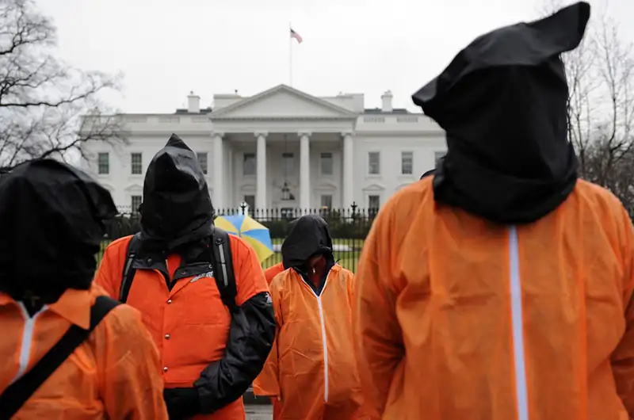
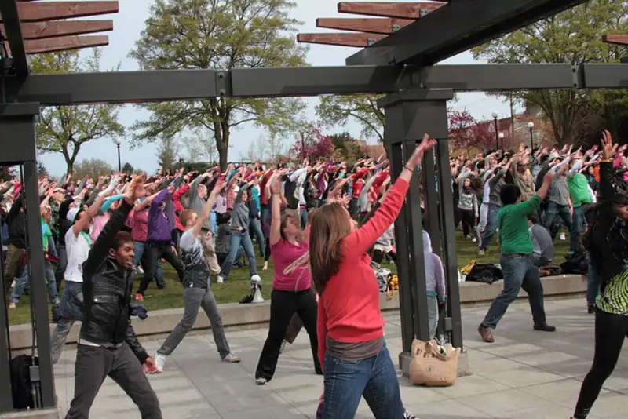
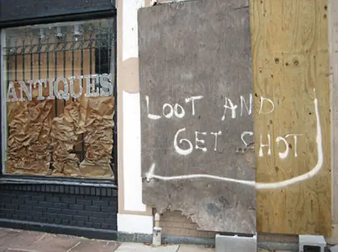
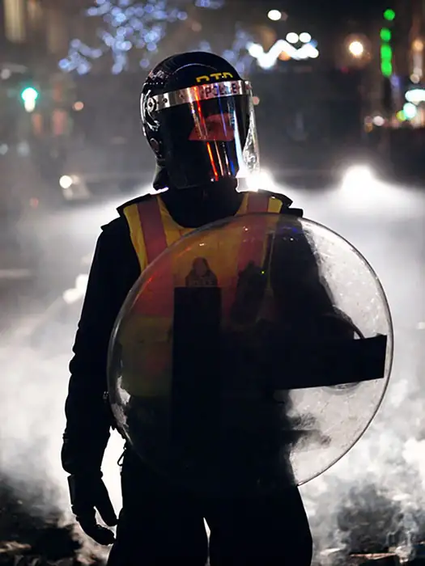
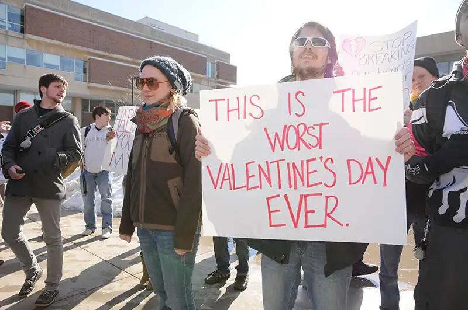
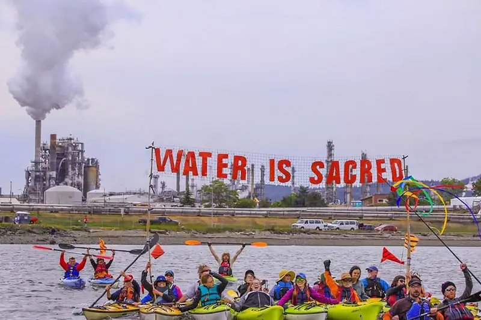
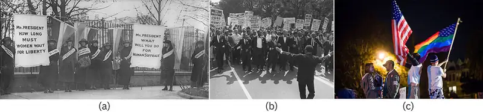

Chapter 21: Social Movements and Social Change¶
Introduction¶

When considering social movements, the images that come to mind are often the most dramatic and dynamic: the Boston Tea Party, Martin Luther King's speech at the 1963 March on Washington, anti-war protesters putting flowers in soldiers' rifles, and Gloria Richardson brushing away a bayonet in Cambridge, Maryland. Or perhaps more violent visuals: burning buildings in Watts, protestors fighting with police, or a lone citizen facing a line of tanks in Tiananmen Square.
But social movement occurs every day, often without any pictures or fanfare, by people of all backgrounds and ages. Organizing an awareness event, volunteering at a shelter, donating to a cause, speaking at a school board meeting, running for office, or writing an article are all ways that people participate in or promote social movements. Some people drive social change by educating themselves through books or trainings. Others find one person to help at a time.
Occupy Wall Street (OWS) was a unique movement that defied some of the theoretical and practical expectations regarding social movements. OWS is set apart by its lack of a single message, its leaderless organization, and its target—financial institutions instead of the government. OWS baffled much of the public, and certainly the media, leading many to ask, "Who are they, and what do they want?"
On July 13, 2011, the organization Adbusters posted on its blog, "Are you ready for a Tahrir moment? On September 17th, flood into lower Manhattan, set up tents, kitchens, peaceful barricades and occupy Wall Street" (Castells 2012).
The "Tahrir moment" was a reference to the 2010 political uprising that began in Tunisia and spread throughout the Middle East and North Africa, including Egypt’s Tahrir Square in Cairo. Although OWS was a reaction to the continuing financial chaos that resulted from the 2008 market meltdown and not a political movement, the Arab Spring was its catalyst.
Manuel Castells (2012) notes that the years leading up to the Occupy movement had witnessed a dizzying increase in the disparity of wealth in the United States, stemming back to the 1980s. The top 1 percent in the nation had secured 58 percent of the economic growth in the period for themselves, while real hourly wages for the average worker had increased by only 2 percent. The wealth of the top 5 percent had increased by 42 percent. The average pay of a CEO was at that time 350 times that of the average worker, compared to less than 50 times in 1983 (AFL-CIO 2014). The country’s leading financial institutions, to many clearly to blame for the crisis and dubbed "too big to fail," were in trouble after many poorly qualified borrowers defaulted on their mortgage loans when the loans’ interest rates rose. The banks were eventually "bailed" out by the government with $700 billion of taxpayer money. According to many reports, that same year top executives and traders received large bonuses.
On September 17, 2011, an anniversary of the signing of the U.S. Constitution, the occupation began. About one thousand protestors descended upon Wall Street, and up to 20,000 people moved into Zuccotti Park, only two blocks away, where they began building a village of tents and organizing a system of communication. The protest soon began spreading throughout the nation, and its members started calling themselves "the 99 percent." More than a thousand cities and towns had Occupy demonstrations.
What did they want? Castells has dubbed OWS "A non-demand movement: The process is the message." Using Facebook, Twitter, Tumblr, and live-stream video, the protesters conveyed a multifold message with a long list of reforms and social change, including the need to address the rising disparity of wealth, the influence of money on election outcomes, the notion of "corporate personhood," a corporatized political system (to be replaced by "direct democracy”), political favoring of the rich, and rising student debt.
What did they accomplish? Despite headlines at the time softly mocking OWS for lack of cohesion and lack of clear messaging, the movement is credited with bringing attention to income inequality and the seemingly preferential treatment of financial institutions accused of wrongdoing. Recall from the chapter on Crime and Deviance that many financial crimes are not prosecuted, and their perpetrators rarely face jail time. It is likely that the general population is more sensitive to those issues than they were before the Occupy and related movements made them more visible.
What is the long-term impact? Has the United States changed the way it manages inequality? Certainly not. As discussed in several chapters, income inequality has generally increased. But is a major shift in our future?
The late James C. Davies suggested in his 1962 paper, "Toward a Theory of Revolution" that major change depends upon the mood of the people, and that it is extremely unlikely those in absolute poverty will be able to overturn a government, simply because the government has infinitely more power.
Instead, a shift is more possible when those with more power become involved. When formerly prosperous people begin to have unmet needs and unmet expectations, they become more disturbed: their mood changes. Eventually an intolerable point is reached, and revolution occurs. Thus, change comes not from the very bottom of the social hierarchy, but from somewhere in the middle (Davies 1962). For example, the Arab Spring was driven by mostly young, educated people whose promise and expectations were thwarted by corrupt autocratic governments. OWS too came not from the bottom but from people in the middle, who exploited the power of social media to enhance communication.
21.1 Collective Behavior¶
Learning Objectives
By the end of this section, you should be able to:
- Describe different forms of collective behavior
- Differentiate between types of crowds
- Discuss emergent norm, value-added, and assembling perspective analyses of collective behavior
Sociology in the Real World: Flash Mobs and Challenges

In March 2014, a group of musicians got together in a fish market in Odessa for a spontaneous performance of Beethoven's “Ode to Joy” from his Ninth Symphony. While tensions were building over Ukraine's efforts to join the European Union, and even as Russian troops had taken control of the Ukrainian airbase in Belbek, the Odessa Philharmonic Orchestra and Opera Chorus tried to lighten the troubled times for shoppers with music and song. Spontaneous gatherings like this are called flash mobs. They are often recorded or live streamed, and are sometimes planned to celebrate an event or person.
While flash mobs are often intensely designed and rehearsed in order to give the impression of spontaneity, challenges don't always go according to plan: Cinnamon is too intense, buckets may fall on people's heads, or a bottle breaks on the floor. But successes and failures on social media can tie people together. Challenges can lead to chats, recollections, and repeats.
Humans seek connections and shared experiences. Perhaps experiencing a flash mob event enhances this bond. It certainly interrupts our otherwise mundane routine with a reminder that we are social animals.
Forms of Collective Behavior¶
Flash mobs are examples of collective behavior, noninstitutionalized activity in which several or many people voluntarily engage. Other examples are a group of commuters traveling home from work and a population of teens adopting a favorite singer’s hairstyle. In short, collective behavior is any group behavior that is not mandated or regulated by an institution. There are three primary forms of collective behavior: the crowd, the mass, and the public.
It takes a fairly large number of people in close proximity to form a crowd (Lofland 1993). Examples include a group of people attending an Ani DiFranco concert, tailgating at a Patriots game, or attending a worship service. Turner and Killian (1993) identified four types of crowds. Casual crowds consist of people who are in the same place at the same time but who aren’t really interacting, such as people standing in line at the post office. Conventional crowds are those who come together for a scheduled event that occurs regularly, like a religious service. Expressive crowds are people who join together to express emotion, often at funerals, weddings, or the like. The final type, acting crowds, focuses on a specific goal or action, such as a protest movement or riot.
In addition to the different types of crowds, collective groups can also be identified in two other ways. A mass is a relatively large number of people with a common interest, though they may not be in close proximity (Lofland 1993), such as players of the popular Facebook game Farmville. A public, on the other hand, is an unorganized, relatively diffused group of people who share ideas, such as the Libertarian political party. While these two types of crowds are similar, they are not the same. To distinguish between them, remember that members of a mass share interests, whereas members of a public share ideas.
Theoretical Perspectives on Collective Behavior¶
Early collective behavior theories (LeBon 1895; Blumer 1969) focused on the irrationality of crowds. Eventually, those theorists who viewed crowds as uncontrolled groups of irrational people were supplanted by theorists who viewed the behavior some crowds engaged in as the rational behavior of logical beings.
Emergent-Norm Perspective¶

Sociologists Ralph Turner and Lewis Killian (1993) built on earlier sociological ideas and developed what is known as emergent norm theory. They believe that the norms experienced by people in a crowd may be disparate and fluctuating. They emphasize the importance of these norms in shaping crowd behavior, especially those norms that shift quickly in response to changing external factors. Emergent norm theory asserts that, in this circumstance, people perceive and respond to the crowd situation with their particular (individual) set of norms, which may change as the crowd experience evolves. This focus on the individual component of interaction reflects a symbolic interactionist perspective.
For Turner and Killian, the process begins when individuals suddenly find themselves in a new situation, or when an existing situation suddenly becomes strange or unfamiliar. For example, think about human behavior during Hurricane Katrina. New Orleans was decimated and people were trapped without supplies or a way to evacuate. In these extraordinary circumstances, what outsiders saw as “looting” was defined by those involved as seeking needed supplies for survival. Normally, individuals would not wade into a corner gas station and take canned goods without paying, but given that they were suddenly in a greatly changed situation, they established a norm that they felt was reasonable.
Once individuals find themselves in a situation ungoverned by previously established norms, they interact in small groups to develop new guidelines on how to behave. According to the emergent-norm perspective, crowds are not viewed as irrational, impulsive, uncontrolled groups. Instead, norms develop and are accepted as they fit the situation. While this theory offers insight into why norms develop, it leaves undefined the nature of norms, how they come to be accepted by the crowd, and how they spread through the crowd.
Value-Added Theory¶
Neil Smelser’s (1962) meticulous categorization of crowd behavior, called value-added theory, is a perspective within the functionalist tradition based on the idea that several conditions must be in place for collective behavior to occur. Each condition adds to the likelihood that collective behavior will occur. The first condition is structural conduciveness, which occurs when people are aware of the problem and have the opportunity to gather, ideally in an open area. Structural strain, the second condition, refers to people’s expectations about the situation at hand being unmet, causing tension and strain. The next condition is the growth and spread of a generalized belief, wherein a problem is clearly identified and attributed to a person or group.
Fourth, precipitating factors spur collective behavior; this is the emergence of a dramatic event. The fifth condition is mobilization for action, when leaders emerge to direct a crowd to action. The final condition relates to action by the agents. Called social control, it is the only way to end the collective behavior episode (Smelser 1962).
A real-life example of these conditions occurred after the fatal police shooting of teenager Michael Brown, an unarmed eighteen-year-old African American, in Ferguson, MO on August 9, 2014. The shooting drew national attention almost immediately. A large group of mostly Black, local residents assembled in protest—a classic example of structural conduciveness. When the community perceived that the police were not acting in the people's interest and were withholding the name of the officer, structural strain became evident. A growing generalized belief evolved as the crowd of protesters were met with heavily armed police in military-style protective uniforms accompanied by an armored vehicle. The precipitating factor of the arrival of the police spurred greater collective behavior as the residents mobilized by assembling a parade down the street. Ultimately they were met with tear gas, pepper spray, and rubber bullets used by the police acting as agents of social control. The element of social control escalated over the following days until August 18, when the governor called in the National Guard.

Assembling Perspective¶
Interactionist sociologist Clark McPhail (1991) developed assembling perspective, another system for understanding collective behavior that credited individuals in crowds as rational beings. Unlike previous theories, this theory refocuses attention from collective behavior to collective action. Remember that collective behavior is a noninstitutionalized gathering, whereas collective action is based on a shared interest. McPhail’s theory focused primarily on the processes associated with crowd behavior, plus the lifecycle of gatherings. He identified several instances of convergent or collective behavior, as shown on the chart below.
Table 21.1 Clark McPhail identified various circumstances of convergent and collective behavior (McPhail 1991).
| Type of crowd | Description | Example |
|---|---|---|
| Convergence clusters | Family and friends who travel together | Carpooling parents take several children to the movies |
| Convergent orientation | Group all facing the same direction | A semi-circle around a stage |
| Collective vocalization | Sounds or noises made collectively | Screams on a roller coaster |
| Collective verbalization | Collective and simultaneous participation in a speech or song | Pledge of Allegiance in the school classroom |
| Collective gesticulation | Body parts forming symbols | The YMCA dance |
| Collective manipulation | Objects collectively moved around | Holding signs at a protest rally |
| Collective locomotion | The direction and rate of movement to the event | Children running to an ice cream truck |
As useful as this is for understanding the components of how crowds come together, many sociologists criticize its lack of attention on the large cultural context of the described behaviors, instead focusing on individual actions.
21.2 Social Movements¶
Learning Objectives
By the end of this section, you should be able to:
- Demonstrate awareness of social movements on a state, national, and global level
- Distinguish between different types of social movements
- Identify stages of social movements
- Discuss theoretical perspectives on social movements, like resource mobilization, framing, and new social movement theory
Social movements are purposeful, organized groups that strive to work toward a common social goal. While most of us learned about social movements in history classes, we tend to take for granted the fundamental changes they caused —and we may be completely unfamiliar with the trend toward global social movements. But from the antitobacco movement that has worked to outlaw smoking in public buildings and raise the cost of cigarettes, to political uprisings throughout the Arab world, movements are creating social change on a global scale.
Levels of Social Movements¶
Movements happen in our towns, in our nation, and around the world. Let’s take a look at examples of social movements, from local to global. No doubt you can think of others on all of these levels, especially since modern technology has allowed us a near-constant stream of information about the quest for social change around the world.

Local¶
Local social movements typically refer to those in cities or towns, but they can also affect smaller constituencies, such as college campuses. Sometimes colleges are smaller hubs of a national movement, as seen during the Vietnam War protests or the Black Lives Matter protests. Other times, colleges are managing a more local issue. In 2012, The Cooper Union in New York City announced that, due to financial mismanagement and unforeseen downturns from the Great Recession, the college had a massive shortfall; it would be forced to charge tuition for the first time. To students at most other colleges, tuition would not seem out of line, but Cooper Union was founded (and initially funded) under the principle that it would not charge tuition. When the school formally announced the plan to charge tuition, students occupied a building and, later, the college president's office. Student action eventually contributed to the president's resignation and a financial recovery plan in partnership with the state attorney general.
Another example occurred in Wisconsin. After announcing a significant budget shortfall, Governor Scott Walker put forth a financial repair bill that would reduce the collective bargaining abilities of unions and other organizations in the state. (Collective bargaining was used to attain workplace protections, benefits, healthcare, and fair pay.) Faculty at the state's college system were not in unions, but teaching assistants, researchers, and other staff had regularly collectively bargained. Faced with the prospect of reduced job protections, pay, and benefits, the staff members began one of the earliest protests against Walker's action, by protesting on campus and sending an ironic message of love to the governor on Valentine's Day. Over time, these efforts would spread to other organizations in the state.
State¶
The most impactful state-level protest would be to cease being a state, and organizations in several states are working toward that goal. Texas secession has been a relatively consistent movement since about 1990. The past decade has seen an increase in rhetoric and campaigns to drive interest and support for a public referendum (a direct vote on the matter by the people). The Texas Nationalist Movement, Texas Secede!, and other groups have provided formal proposals and programs designed to make the idea seem more feasible. Texit has become a widely used nickname and hashtag for the movement. And in February 2021, a bill was introduced to hold a referendum that would begin formal discussions on creating an independent nation—though the bill's sponsor indicated that it was mainly intended to begin conversation and evaluations rather than directly lead to secession (De Alba 2021).
States also get involved before and after national decisions. The legalization of same-sex marriage throughout the United States led some people to feel their religious beliefs were under attack. Following swiftly upon the heels of the Supreme Court Obergefell ruling, the Indiana legislature passed a Religious Freedom Restoration Act (RFRA, pronounced "rifra"). Originally crafted decades ago with the purpose of preserving the rights of minority religious people, more recent RFRA laws allow individuals, businesses, and other organizations to decide whom they will serve based on religious beliefs. For example, Arkansas's 2021 law allowed doctors to refuse to treat patients based on the doctor's religious beliefs (Associated Press 2021). In this way, state-level organizations and social movements are responding to a national decision.
Global¶
Social organizations worldwide take stands on such general areas of concern as poverty, sex trafficking, and the use of genetically modified organisms (GMOs) in food. Nongovernmental organizations (NGOs) are sometimes formed to support such movements, such as the International Federation of Organic Agriculture Movement (FOAM). Global efforts to reduce poverty are represented by the Oxford Committee for Famine Relief (OXFAM), among others. The Fair Trade movement exists to protect and support food producers in developing countries. Occupy Wall Street, although initially a local movement, also went global throughout Europe and, as the chapter’s introductory photo shows, the Middle East.
Types of Social Movements¶
We know that social movements can occur on the local, national, or even global stage. Are there other patterns or classifications that can help us understand them? Sociologist David Aberle (1966) addresses this question by developing categories that distinguish among social movements based on what they want to change and how much change they want. Reform movements seek to change something specific about the social structure. Examples include antinuclear groups, Mothers Against Drunk Driving (MADD), the Dreamers movement for immigration reform, and the Human Rights Campaign’s advocacy for Marriage Equality. Revolutionary movements seek to completely change every aspect of society. These include the 1960s counterculture movement, including the revolutionary group The Weather Underground, as well as anarchist collectives. Texas Secede! is a revolutionary movement. Religious/Redemptive movements are “meaning seeking,” and their goal is to provoke inner change or spiritual growth in individuals. Organizations pushing these movements include Heaven’s Gate or the Branch Davidians. The latter is still in existence despite government involvement that led to the deaths of numerous Branch Davidian members in 1993. Alternative movements are focused on self-improvement and limited, specific changes to individual beliefs and behavior. These include trends like transcendental meditation or a macrobiotic diet. Resistance movements seek to prevent or undo change to the social structure. The Ku Klux Klan, the Minutemen, and pro-life movements fall into this category.
Stages of Social Movements¶
Later sociologists studied the lifecycle of social movements—how they emerge, grow, and in some cases, die out. Blumer (1969) and Tilly (1978) outline a four-stage process. In the preliminary stage, people become aware of an issue, and leaders emerge. This is followed by the coalescence stage when people join together and organize in order to publicize the issue and raise awareness. In the institutionalization stage, the movement no longer requires grassroots volunteerism: it is an established organization, typically with a paid staff. When people fall away and adopt a new movement, the movement successfully brings about the change it sought, or when people no longer take the issue seriously, the movement falls into the decline stage. Each social movement discussed earlier belongs in one of these four stages. Where would you put them on the list?
Social Media and Social Movements¶

As we have mentioned throughout this text, and likely as you have experienced in your life, social media is a widely used mechanism in social movements. In the Groups and Organizations chapter, we discussed Tarana Burke first using "Me Too" in 2006 on a major social media venue of the time (MySpace). The phrase later grew into a massive movement when people began using it on Twitter to drive empathy and support regarding experiences of sexual harassment or sexual assault. In a similar way, Black Lives Matter began as a social media message after George Zimmerman was acquitted in the shooting death of 17-year-old Trayvon Martin, and the phrase burgeoned into a formalized (though decentralized) movement in subsequent years.
Social media has the potential to dramatically transform how people get involved in movements ranging from local school district decisions to presidential campaigns. As discussed above, movements go through several stages, and social media adds a dynamic to each of them. In the the preliminary stage, people become aware of an issue, and leaders emerge. Compared to movements of 20 or 30 years ago, social media can accelerate this stage substantially. Issue awareness can spread at the speed of a click, with thousands of people across the globe becoming informed at the same time. In a similar vein, those who are savvy and engaged with social media may emerge as leaders, even if, for example, they are not great public speakers.
At the next stage, the coalescence stage, social media is also transformative. Coalescence is the point when people join together to publicize the issue and get organized. President Obama’s 2008 campaign was a case study in organizing through social media. Using Twitter and other online tools, the campaign engaged volunteers who had typically not bothered with politics. Combined with comprehensive data tracking and the ability to micro-target, the campaign became a blueprint for others to build on. The 2020 elections featured a level of data analysis and rapid response capabilities that, while echoing the Obama campaign's early work, made the 2008 campaign look quaint. The campaigns and political analysts could measure the level of social media interaction following any campaign stop, debate, statement by the candidate, news mention, or any other event, and measure whether the tone or "sentiment" was positive or negative. Political polls are still important, but social media provides instant feedback and opportunities for campaigns to act, react, or—on a daily basis—ask for donations based on something that had occurred just hours earlier (Knowledge at Wharton 2020).
Interestingly, social media can have interesting outcomes once a movement reaches the institutionalization stage. In some cases, a formal organization might exist alongside the hashtag or general sentiment, as is the case with Black Lives Matter. At any one time, BLM is essentially three things: a structured organization, an idea with deep and personal meaning for people, and a widely used phrase or hashtag. It's possible that users of the hashtag are not referring to the formal organization. It's even possible that people who hold a strong belief that Black lives matter do not agree with all of the organization's principles or its leadership. And in other cases, people may be very aligned with all three contexts of the phrase. Social media is still crucial to the social movement, but its interplay is both complex and evolving.
In a similar way, MeToo activists, including Tarana Burke herself, have sought to clarify the interweaving of different aspects of the movement. She told the Harvard Gazette in 2020:
I think we have to be careful about what we’re calling the movement. And I think one of the things I’ve learned in the last two years is that folks don’t really understand what a movement is or how it’s defined. The people using the hashtag on the internet were the impetus for Me Too being put into the public sphere. The media coverage of the viralness of Me Too and the people being accused are media coverage of a popular story that derived from the hashtag. The movement is the work that our organization and others like us are doing to both support survivors and move people to action (Walsh 2020).
Sociologists have identified high-risk activism, such as the civil rights movement, as a “strong-tie” phenomenon, meaning that people are far more likely to stay engaged and not run home to safety if they have close friends who are also engaged. The people who dropped out of the movement—who went home after the danger became too great—did not display any less ideological commitment. But they lacked the strong-tie connection to other people who were staying. Social media had been considered “weak-tie” (McAdam 1993 and Brown 2011). People follow or friend people they have never met. Weak ties are important for our social structure, but they seemed to limit the level of risk we’ll take on their behalf. For some people, social media remains that way, but for others it can relate to or build stronger ties. For example, if people, who had for years known each other only through an online group, meet in person at an event, they may feel far more connected at that event and afterward than people who had never interacted before. And as we discussed in the Groups chapter, social media itself, even if people never meet, can bring people into primary group status, forming stronger ties.
Another way to consider the impact of social media on activism is through something that may or may not be emotional, has little implications regarding tie strength, and may be fleeting rather than permanent, but still be one of the largest considerations of any formal social movement: money. Returning to politics, think of the massive amounts of campaign money raised in each election cycle through social media. In the 2020 Presidential election and its aftermath, hundreds of millions of dollars were raised through social media. Likewise, 55 percent of people who engage with nonprofits through social media take some sort of action; and for 60 percent of them (or 33 percent of the total) that action is to give money to support the cause (Nonprofit Source 2020).
Theoretical Perspectives on Social Movements¶
Most theories of social movements are called collective action theories, indicating the purposeful nature of this form of collective behavior. The following three theories are but a few of the many classic and modern theories developed by social scientists.
Resource Mobilization¶
McCarthy and Zald (1977) conceptualize resource mobilization theory as a way to explain movement success in terms of the ability to acquire resources and mobilize individuals. Resources are primarily time and money, and the more of both, the greater the power of organized movements. Numbers of social movement organizations (SMOs), which are single social movement groups, with the same goals constitute a social movement industry (SMI). Together they create what McCarthy and Zald (1977) refer to as "the sum of all social movements in a society."
Resource Mobilization and the Civil Rights Movement¶
An example of resource mobilization theory is activity of the civil rights movement in the decade between the mid 1950s and the mid 1960s. Social movements had existed before, notably the Women's Suffrage Movement and a long line of labor movements, thus constituting an existing social movement sector, which is the multiple social movement industries in a society, even if they have widely varying constituents and goals. The civil rights movement had also existed well before Rosa Parks refused to give up her bus seat to a white man. Less known is that Parks was a member of the NAACP and trained in leadership (A&E Television Networks, LLC. 2014). But her action that day was spontaneous and unplanned (Schmitz 2014). Her arrest triggered a public outcry that led to the famous Montgomery bus boycott, turning the movement into what we now think of as the "civil rights movement" (Schmitz 2014).
Mobilization had to begin immediately. Boycotting the bus made other means of transportation necessary, which was provided through car pools. Churches and their ministers joined the struggle, and the protest organization In Friendship was formed as well as The Friendly Club and the Club From Nowhere. A social movement industry, which is the collection of the social movement organizations that are striving toward similar goals, was growing.
Martin Luther King Jr. emerged during these events to become the charismatic leader of the movement, gained respect from elites in the federal government, and aided by even more emerging SMOs such as the Student Non-Violent Coordinating Committee (SNCC), the Congress of Racial Equality (CORE), the National Association for the Advancement of Colored People (NAACP), and the Southern Christian Leadership Conference (SCLC), among others. Several still exist today. Although the movement in that period was an overall success, and laws were changed (even if not attitudes), the "movement" continues. So do struggles to keep the gains that were made, even as the U.S. Supreme Court has recently weakened the Voter Rights Act of 1965, once again making it more difficult for Black Americans and other minorities to vote.
![Pictured is a flow chart showing the tiers of the Social Movement Sector. At the top of the chart is the social movement sector. Below that box is the social movement industries. Three boxes come from that one; and, they are the animal right industry, the marriage rights industry, and the food movement industry. One box comes from the animal rights industry box; and, it is social movement organization. Two boxes come from the social movement organization box; and, they are People for the Ethical Treatment of Animals (PETA) and Animal Liberation Front (ALF). One box comes from the marriage rights industry; and, it is social movement organizations. Two more boxes come from the social movement organizations box; and, they are the Human Rights Campaign, and the National Organization for Marriage. One box come from the food movement industry box; and, it is social movement organizations. Two more boxes come from the social movement organizations box; and, they are the Slow Food Movement, and the Locavore Movement.](img/soc3e-21-02-05a.webp)
Framing/Frame Analysis¶
Over the past several decades, sociologists have developed the concept of frames to explain how individuals identify and understand social events and which norms they should follow in any given situation (Goffman 1974; Snow et al. 1986; Benford and Snow 2000). Imagine entering a restaurant. Your “frame” immediately provides you with a behavior template. It probably does not occur to you to wear pajamas to a fine-dining establishment, throw food at other patrons, or spit your drink onto the table. However, eating food at a sleepover pizza party provides you with an entirely different behavior template. It might be perfectly acceptable to eat in your pajamas and maybe even throw popcorn at others or guzzle drinks from cans.
Successful social movements use three kinds of frames (Snow and Benford 1988) to further their goals. The first type, diagnostic framing, states the problem in a clear, easily understood way. When applying diagnostic frames, there are no shades of gray: instead, there is the belief that what “they” do is wrong and this is how “we” will fix it. The anti-gay marriage movement is an example of diagnostic framing with its uncompromising insistence that marriage is only between a man and a woman. Prognostic framing, the second type, offers a solution and states how it will be implemented. Some examples of this frame, when looking at the issue of marriage equality as framed by the anti-gay marriage movement, include the plan to restrict marriage to “one man/one woman” or to allow only “civil unions” instead of marriages. As you can see, there may be many competing prognostic frames even within social movements adhering to similar diagnostic frames. Finally, motivational framing is the call to action: what should you do once you agree with the diagnostic frame and believe in the prognostic frame? These frames are action-oriented. In the gay marriage movement, a call to action might encourage you to vote “no” on Proposition 8 in California (a move to limit marriage to male-female couples), or conversely, to contact your local congressperson to express your viewpoint that marriage should be restricted to male-female couples.
With so many similar diagnostic frames, some groups find it best to join together to maximize their impact. When social movements link their goals to the goals of other social movements and merge into a single group, a frame alignment process (Snow et al. 1986) occurs—an ongoing and intentional means of recruiting participants to the movement.
This frame alignment process has four aspects: bridging, amplification, extension, and transformation. Bridging describes a “bridge” that connects uninvolved individuals and unorganized or ineffective groups with social movements that, though structurally unconnected, nonetheless share similar interests or goals. These organizations join together to create a new, stronger social movement organization. Can you think of examples of different organizations with a similar goal that have banded together?
In the amplification model, organizations seek to expand their core ideas to gain a wider, more universal appeal. By expanding their ideas to include a broader range, they can mobilize more people for their cause. For example, the Slow Food movement extends its arguments in support of local food to encompass reduced energy consumption, pollution, obesity from eating more healthfully, and more.
In extension, social movements agree to mutually promote each other, even when the two social movement organization’s goals don’t necessarily relate to each other’s immediate goals. This often occurs when organizations are sympathetic to each others’ causes, even if they are not directly aligned, such as women’s equal rights and the civil rights movement.

Transformation means a complete revision of goals. Once a movement has succeeded, it risks losing relevance. If it wants to remain active, the movement has to change with the transformation or risk becoming obsolete. For instance, when the women’s suffrage movement gained women the right to vote, members turned their attention to advocating equal rights and campaigning to elect women to office. In short, transformation is an evolution in the existing diagnostic or prognostic frames that generally achieves a total conversion of the movement.
New Social Movement Theory¶
New social movement theory, a development of European social scientists in the 1950s and 1960s, attempts to explain the proliferation of postindustrial and postmodern movements that are difficult to analyze using traditional social movement theories. Rather than being one specific theory, it is more of a perspective that revolves around understanding movements as they relate to politics, identity, culture, and social change. Some of these more complex interrelated movements include ecofeminism, which focuses on the patriarchal society as the source of environmental problems, and the transgender rights movement. Sociologist Steven Buechler (2000) suggests that we should be looking at the bigger picture in which these movements arise—shifting to a macro-level, global analysis of social movements.
21.3 Social Change¶
Learning Objectives
By the end of this section, you should be able to:
- Explain how technology, social institutions, population, and the environment can bring about social change
- Discuss the importance of modernization in relation to social change
Collective behavior and social movements are just two of the forces driving social change, which is the change in society created through social movements as well as external factors. Essentially, any disruptive shift in the status quo, be it intentional or random, human-caused or natural, can lead to social change.
Causes of Social Change¶
Throughout this text, we have discussed various causes and effects of social change. Below is a recap of some major drivers, including technology, social institutions, population, and the environment. Alone or in combination, these agents can disturb, improve, disrupt, or otherwise influence society.
Technology¶
Some would say that improving technology has made our lives easier. Imagine what your day would be like without the Internet, the automobile, or electricity. In The World Is Flat, Thomas Friedman (2005) argues that technology is a driving force behind globalization, while the other forces of social change (social institutions, population, environment) play comparatively minor roles. He suggests that we can view globalization as occurring in three distinct periods. First, globalization was driven by military expansion, powered by horsepower and wind power. The countries best able to take advantage of these power sources expanded the most, and exert control over the politics of the globe from the late fifteenth century to around the year 1800. The second shorter period from approximately 1800 C.E. to 2000 C.E. consisted of a globalizing economy. Steam and rail power were the guiding forces of social change and globalization in this period. Finally, Friedman brings us to the post-millennial era. In this period of globalization, change is driven by technology, particularly the Internet (Friedman 2005).
Technology can change other societal forces. For example, advances in medical technology allow people to live longer, have more children, and survive some natural disasters or problems. Advances in agricultural technology have allowed us to alter food products, which impacts our health as well as the environment. A given technology can create beneficiaries, but that same technology—especially if it is disruptive—can lead others to lose their jobs, suffer from pollution, or be monitored or victimized.
The digital divide—the increasing gap between the technological haves and have-nots—exists both locally and globally. Added security issues include theft of personal information, cyber aggression, and loss of privacy. The constant change in technology leads to an almost inevitable lack of preparation for new risks on both personal and societal scales.
Sociology in the Real World: Crowdsourcing: Using the Web to Get Things Done
Millions of people today walk around with their heads tilted toward a small device held in their hands. Perhaps you are reading this textbook on a phone or tablet. People in developed societies now take communication technology for granted. How has this technology affected social change in our society and others? One very positive way is crowdsourcing.
Thanks to the web, digital crowdsourcing is the process of obtaining needed services, ideas, or content by soliciting contributions from a large group of people, and especially from an online community rather than from traditional employees or suppliers. Web-based companies such as Kickstarter have been created precisely for the purposes of raising large amounts of money in a short period of time, notably by sidestepping the traditional financing process. This book, or virtual book, is the product of a kind of crowdsourcing effort. It has been written and reviewed by several authors in a variety of fields to give you free access to a large amount of data produced at a low cost. The most common example of crowdsourced data is Wikipedia, the online encyclopedia, which is the result of thousands of volunteers adding and correcting material.
Perhaps the most striking use of crowdsourcing is disaster relief. By tracking tweets and e-mails and organizing the data in order of urgency and quantity, relief agencies can address the most urgent calls for help, such as for medical aid, food, shelter, or rescue. On January 12, 2010 a devastating earthquake hit the nation of Haiti. By January 25, a crisis map had been created from more than 2,500 incident reports, and more reports were added every day. The same technology was used to assist victims of the Japanese earthquake and tsunami in 2011.
The Darker Side of Technology: Electronic Aggression in the Information Age¶
The U.S. Center for Disease Control (CDC) uses the term "electronic aggression" to describe "any type of harassment or bullying that occurs through e-mail, a chat room, instant messaging, a website (including blogs), or text messaging" (CDC, n.d.) We generally think of this as cyberbullying. A 2011 study by the U.S. Department of Education found that 27.8 percent of students aged twelve through eighteen reported experiencing bullying. From the same sample 9 percent specifically reported having been a victim of cyberbullying (Robers et al. 2013).
Cyberbullying represents a powerful change in modern society. William F. Ogburn (1922) might have been describing it nearly a century ago when he defined "cultural lag," which occurs when material culture precedes nonmaterial culture. That is, society may not fully comprehend all the consequences of a new technology and so may initially reject it (such as stem cell research) or embrace it, sometimes with unintended negative consequences (such as pollution).
Cyberbullying is a special feature of the Internet. Unique to electronic aggression is that it can happen twenty-four hours a day, every day; it can reach a child (or an adult) even though she or he might otherwise feel safe in a locked house. The messages and images may be posted anonymously and to a very wide audience, and they might even be impossible to trace. Finally, once posted, the texts and images are very hard to delete. Its effects range from the use of alcohol and drugs to lower self-esteem, health problems, and even suicide (CDC, n.d.).
Social Institutions¶
Each change in a single social institution leads to changes in all social institutions. For example, the industrialization of society meant that there was no longer a need for large families to produce enough manual labor to run a farm. Further, new job opportunities were in close proximity to urban centers where living space was at a premium. The result is that the average family size shrunk significantly.
This same shift toward industrial corporate entities also changed the way we view government involvement in the private sector, created the global economy, provided new political platforms, and even spurred new religions and new forms of religious worship like Scientology. It has also informed the way we educate our children: originally schools were set up to accommodate an agricultural calendar so children could be home to work the fields in the summer, and even today, teaching models are largely based on preparing students for industrial jobs, despite that being an outdated need. A shift in one area, such as industrialization, means an interconnected impact across social institutions.
Population¶
Population composition is changing at every level of society. Births increase in one nation and decrease in another. Some families delay childbirth while others start bringing children into their folds early. Population changes can be due to random external forces, like an epidemic, or shifts in other social institutions, as described above. But regardless of why and how it happens, population trends have a tremendous interrelated impact on all other aspects of society.
In the United States, we are experiencing an increase in our senior population as Baby Boomers retire, which will in turn change the way many of our social institutions are organized. For example, there is an increased demand for housing in warmer climates, a massive shift in the need for elder care and assisted living facilities, and growing incidence of elder abuse. Retiring Boomers may also lead to labor or expertise shortages, and (as discussed extensively in the chapter on Aging and the Elderly) healthcare costs will increase to become a larger and larger portion of our economy.
Globally, often the countries with the highest fertility rates are least able to absorb and attend to the needs of a growing population. Family planning is a large step in ensuring that families are not burdened with more children than they can care for. On a macro level, the increased population, particularly in the poorest parts of the globe, also leads to increased stress on the planet’s resources.
The Environment¶
As discussed extensively in the chapter on Population, Urbanization, and the Environment, changes in the environment and our interaction with it can have promising or devastating effects. Access to safe water is a primary determinant of health and prosperity. And as human populations expand in more vulnerable areas while natural disasters occur with more frequency, we see an increase in the number of people affected by those disasters.
Overall health and wellbeing are deeply affected by the environment even in urbanized areas. Many types of cancers, which are collectively the leading cause of death in higher-income countries, have environmental influences (Mahase 2019).
Sociology in the Real World: Hurricane Katrina: When It All Comes Together
The four key elements that affect social change that are described in this chapter are the environment, technology, social institutions, and population. In 2005, New Orleans was struck by a devastating hurricane. But it was not just the hurricane that was disastrous. It was the converging of all four of these elements, and the text below will connect the elements by putting the words in parentheses.
Before Hurricane Katrina (environment) hit, poorly coordinated evacuation efforts had left about 25 percent of the population, almost entirely African Americans who lacked private transportation, to suffer the consequences of the coming storm (demographics). Then "after the storm, when the levees broke, thousands more [refugees] came. And the city buses, meant to take them to proper shelters, were underwater" (Sullivan 2005). No public transportation was provided, drinking water and communications were delayed, and FEMA, the Federal Emergency Management Agency (institutions), was headed by an appointee with no real experience in emergency management. Those who were eventually evacuated did not know where they were being sent or how to contact family members. African Americans were sent the farthest from their homes. When the displaced began to return, public housing had not been reestablished, yet the Superdome stadium, which had served as a temporary disaster shelter, had been rebuilt. Homeowners received financial support, but renters did not.
As it turns out, it was not entirely the hurricane that cost the lives of 1,500 people, but the fact that the city’s storm levees (technology), which had been built too low and which failed to meet numerous other safety specifications, gave way, flooding the lower portions of the city, occupied almost entirely by African Americans.
Journalist Naomi Klein, in her book The Shock Doctrine: The Rise of Disaster Capitalism, presents a theory of a "triple shock," consisting of an initial disaster, an economic shock that replaces public services with private (for-profit) ones, and a third shock consisting of the intense policing of the remaining public. Klein supports her claim by quoting then-Congressman Richard Baker as saying, "We finally cleaned up public housing in New Orleans. We couldn't do it, but God did." She quotes developer Joseph Canizaro as stating, "I think we have a clean sheet to start again. And with that clean sheet we have some very big opportunities."
One clean sheet was that New Orleans began to replace public schools with charters, breaking the teachers’ union and firing all public school teachers (Mullins 2014). Public housing was seriously reduced and the poor were forced out altogether or into the suburbs far from medical and other facilities (The Advocate 2013). Finally, by relocating African Americans and changing the ratio of African Americans to whites, New Orleans changed its entire demographic makeup.
Modernization¶
Modernization describes the processes that increase the amount of specialization and differentiation of structure in societies resulting in the move from an undeveloped society to a developed, technologically driven society (Irwin 1975). By this definition, the level of modernity within a society is judged by the sophistication of its technology, particularly as it relates to infrastructure, industry, and the like. However, it is important to note the inherent ethnocentric bias of such assessment. Why do we assume that those living in semi-peripheral and peripheral nations would find it so wonderful to become more like the core nations? Is modernization always positive?
One contradiction of all kinds of technology is that they often promise time-saving benefits, but somehow fail to deliver. How many times have you ground your teeth in frustration at an Internet site that refused to load or at a dropped call on your cell phone? Despite time-saving devices such as dishwashers, washing machines, and, now, remote control vacuum cleaners, the average amount of time spent on housework is the same today as it was fifty years ago. And the dubious benefits of 24/7 e-mail and immediate information have simply increased the amount of time employees are expected to be responsive and available. While once businesses had to travel at the speed of the U.S. postal system, sending something off and waiting until it was received before the next stage, today the immediacy of information transfer means there are no such breaks.
Further, the Internet bought us information, but at a cost. The morass of information means that there is as much poor information available as trustworthy sources. There is a delicate line to walk when core nations seek to bring the assumed benefits of modernization to more traditional cultures. For one, there are obvious procapitalist biases that go into such attempts, and it is short-sighted for western governments and social scientists to assume all other countries aspire to follow in their footsteps. Additionally, there can be a kind of neo-liberal defense of rural cultures, ignoring the often crushing poverty and diseases that exist in peripheral nations and focusing only on a nostalgic mythology of the happy peasant. It takes a very careful hand to understand both the need for cultural identity and preservation as well as the hopes for future growth.
Chapter Review¶
Key Terms¶
- acting crowds
- crowds of people who are focused on a specific action or goal
- alternative movements
- social movements that limit themselves to self-improvement changes in individuals
- assembling perspective
- a theory that credits individuals in crowds as behaving as rational thinkers and views crowds as engaging in purposeful behavior and collective action
- casual crowds
- people who share close proximity without really interacting
- collective behavior
- a noninstitutionalized activity in which several people voluntarily engage
- conventional crowds
- people who come together for a regularly scheduled event
- crowd
- a fairly large number of people who share close proximity
- crowdsourcing
- the process of obtaining needed services, ideas, or content by soliciting contributions from a large group of people
- diagnostic framing
- a social problem that is stated in a clear, easily understood manner
- emergent norm theory
- a perspective that emphasizes the importance of social norms in crowd behavior
- expressive crowds
- crowds who share opportunities to express emotions
- flash mob
- a large group of people who gather together in a spontaneous activity that lasts a limited amount of time
- frame alignment process
- using bridging, amplification, extension, and transformation as an ongoing and intentional means of recruiting participants to a movement
- mass
- a relatively large group with a common interest, even if they may not be in close proximity
- modernization
- the process that increases the amount of specialization and differentiation of structure in societies
- motivational framing
- a call to action
- new social movement theory
- a theory that attempts to explain the proliferation of postindustrial and postmodern movements that are difficult to understand using traditional social movement theories
- NGO
- nongovernmental organizations working globally for numerous humanitarian and environmental causes
- prognostic framing
- social movements that state a clear solution and a means of implementation
- public
- an unorganized, relatively diffuse group of people who share ideas
- reform movements
- movements that seek to change something specific about the social structure
- religious/redemptive movements
- movements that work to promote inner change or spiritual growth in individuals
- resistance movements
- those who seek to prevent or undo change to the social structure
- resource mobilization theory
- a theory that explains social movements’ success in terms of their ability to acquire resources and mobilize individuals
- revolutionary movements
- movements that seek to completely change every aspect of society
- social change
- the change in a society created through social movements as well as through external factors like environmental shifts or technological innovations
- social movement
- a purposeful organized group hoping to work toward a common social goal
- social movement industry
- the collection of the social movement organizations that are striving toward similar goals
- social movement organization
- a single social movement group
- social movement sector
- the multiple social movement industries in a society, even if they have widely varying constituents and goals
- value-added theory
- a functionalist perspective theory that posits that several preconditions must be in place for collective behavior to occur
Summary¶
21.1 Collective Behavior¶
Collective behavior is noninstitutionalized activity in which several people voluntarily engage. There are three different forms of collective behavior: crowd, mass, and public. There are three main theories on collective behavior. The first, the emergent-norm perspective, emphasizes the importance of social norms in crowd behavior. The next, the value-added theory, is a functionalist perspective that states that several preconditions must be in place for collective behavior to occur. Finally the assembling perspective focuses on collective action rather than collective behavior, addressing the processes associated with crowd behavior and the lifecycle and various categories of gatherings.
21.2 Social Movements¶
Social movements are purposeful, organized groups, either with the goal of pushing toward change, giving political voice to those without it, or gathering for some other common purpose. Social movements intersect with environmental changes, technological innovations, and other external factors to create social change. There are a myriad of catalysts that create social movements, and the reasons that people join are as varied as the participants themselves. Sociologists look at both the macro- and microanalytical reasons that social movements occur, take root, and ultimately succeed or fail.
21.3 Social Change¶
There are numerous and varied causes of social change. Four common causes, as recognized by social scientists, are technology, social institutions, population, and the environment. All four of these areas can impact when and how society changes. And they are all interrelated: a change in one area can lead to changes throughout. Modernization is a typical result of social change. Modernization refers to the process of increased differentiation and specialization within a society, particularly around its industry and infrastructure. While this assumes that more modern societies are better, there has been significant pushback on this western-centric view that all peripheral and semi-peripheral countries should aspire to be like North America and Western Europe.
References¶
References
AFL-CIO. 2014. "Executive Paywatch." Retrieved December 17, 2014 (http://www.aflcio.org/Corporate-Watch/Paywatch-2014).
Castells, Manuel. 2012. Networks of Outrage and Hope: Social Movements in the Internet Age. Camgridge, UK: Polity.
Davies, James C. 1962. "Toward a Theory of Revolution." American Sociological Review 27, no. 1. Retrieved December 17, 2014 (http://www.jstor.org/discover/2089714?sid=21104884442891&uid=3739256&uid=3739704&uid=4&uid=2).
Gell, Aaron. 2011. "The Wall Street Protesters: What the Hell Do They Want?" New York Observer. Retrieved December 17, 2014 (http://observer.com/2011/09/the-wall-street-protesters-what-the-hell-do-they-want/).
Le Tellier, Alexandria. 2012. "What Occupy Wall Street Wants." Los Angeles Times. Retrieved December 17, 2014 (http://articles.latimes.com/2012/sep/17/news/la-ol-occupy-wall-street-anniversary-message-20120917).
NAACP. 2011. “100 Years of History.” Retrieved December 21, 2011 (http://www.naacp.org/pages/naacp-history).
21.1 Collective Behavior
Blumer, Herbert. 1969. “Collective Behavior.” Pp. 67–121 in Principles of Sociology, edited by A.M. Lee. New York: Barnes and Noble.
LeBon, Gustave. 1960 [1895]. The Crowd: A Study of the Popular Mind. New York: Viking Press.
Lofland, John. 1993. “Collective Behavior: The Elementary Forms.” Pp. 70–75 in Collective Behavior and Social Movements, edited by Russel Curtis and Benigno Aguirre. Boston: Allyn and Bacon.
McPhail, Clark. 1991. The Myth of the Madding Crowd. New York: Aldine de Gruyter.
Smelser, Neil J. 1963. Theory of Collective Behavior. New York: Free Press.
Turner, Ralph, and Lewis M. Killian. 1993. Collective Behavior. 4th ed. Englewood Cliffs, N. J., Prentice Hall.
21.2 Social Movements
A&E Television Networks, LLC. 2014. "Civil Rights Movement." Retrieved December 17, 2014 (http://www.history.com/topics/black-history/civil-rights-movement).
Aberle, David. 1966. The Peyote Religion among the Navaho. Chicago: Aldine.
AP/The Huffington Post. 2014. "Obama: DOMA Unconstitutional, DOJ Should Stop Defending in Court." The Huffington Post. Retrieved December 17, 2014. (http://www.huffingtonpost.com/2011/02/23/obama-doma-unconstitutional_n_827134.html).
Associated Press. 2021. "Arkansas governor signs bill allowing denial of medical services based on 'conscience'" The Associated Press. March 26, 2021. (https://www.thv11.com/article/news/politics/arkansas-governor-bill-allowing-denial-medical-services-conscience/91-f4321c47-f6b1-4325-a18a-13a89ba98c7c)
Area Chicago. 2011. “About Area Chicago.” Retrieved December 28, 2011 (http://www.areachicago.org).
Benford, Robert, and David Snow. 2000. “Framing Processes and Social Movements: An Overview and Assessment.” Annual Review of Sociology 26:611–639.
Blumer, Herbert. 1969. “Collective Behavior.” Pp. 67–121 in Principles of Sociology, edited by A.M. Lee. New York: Barnes and Noble.
Buechler, Steven. 2000. Social Movement in Advanced Capitalism: The Political Economy and Social Construction of Social Activism. New York: Oxford University Press.
Brown, Eileen. 2011. "Strong and Weak Ties: Why Your Weak Ties Matter." Social Media Today. June 30 2011. (https://www.socialmediatoday.com/content/strong-and-weak-ties-why-your-weak-ties-matter)
CNN U.S. 2014. "Same-Sex Marriage in the United States." Retrieved December 17, 2014 (http://www.cnn.com/interactive/us/map-same-sex-marriage/).
CBS Interactive Inc. 2014. "Anonymous' Most Memorable Hacks." Retrieved December 17, 2014 (http://www.cbsnews.com/pictures/anonymous-most-memorable-hacks/9/).
Department of Justice, Office of Public Affairs. 2011. "Letter from the Attorney General to Congress on Litigation Involving the Defense of Marriage Act." Retrieved December 17, 2014 (http://www.justice.gov/opa/pr/letter-attorney-general-congress-litigation-involving-defense-marriage-act).
De Alba, Simone. 2021. "Representative who filed Texit bill clears up what he means." News 4 San Antonio. February 2 2021. (https://news4sanantonio.com/news/local/representative-who-filed-texit-bill-clears-up-what-it-means)
Gladwell, Malcolm. 2010. “Small Change: Why the Revolution Will Not Be Tweeted.” The New Yorker, October 4. Retrieved December 23, 2011 (http://www.newyorker.com/reporting/2010/10/04/101004fa_fact_gladwell?currentPage=all).
Goffman, Erving. 1974. Frame Analysis: An Essay on the Organization of Experience. Cambridge, MA: Harvard University Press.
Human Rights Campaign. 2011. Retrieved December 28, 2011 (http://www.hrc.org).
Knowledge at Wharton. 2020. "How Social Media Is Shaping Political Campaigns." Knowledge@Wharton. August 17 2020. (https://knowledge.wharton.upenn.edu/article/how-social-media-is-shaping-political-campaigns/)
McAdam, Doug, and Ronnelle Paulsen. 1993. “Specifying the Relationship between Social Ties and Activism.” American Journal of Sociology 99:640–667.
McCarthy, John D., and Mayer N. Zald. 1977. “Resource Mobilization and Social Movements: A Partial Theory.” American Journal of Sociology 82:1212–1241.
National Organization for Marriage. 2014. “About NOM.” Retrieved January 28, 2012 (http://www.nationformarriage.org).
Nonprofit Source. 2020. "Social Media Giving Statistics for Nonprofits." Retrieved April 1, 2021. (https://nonprofitssource.com/online-giving-statistics/social-media/)
Sauter, Theresa, and Gavin Kendall. 2011. "Parrhesia and Democracy: Truthtelling, WikiLeaks and the Arab Spring." Social Alternatives 30, no.3: 10–14.
Schmitz, Paul. 2014. "How Change Happens: The Real Story of Mrs. Rosa Parks & the Montgomery Bus Boycott." Huffington Post. Retrieved December 17, 2014 (http://www.huffingtonpost.com/paul-schmitz/how-change-happens-the-re_b_6237544.html).
Slow Food. 2011. “Slow Food International: Good, Clean, and Fair Food.” Retrieved December 28, 2011 (http://www.slowfood.com).
Snow, David, E. Burke Rochford, Jr., Steven , and Robert Benford. 1986. “Frame Alignment Processes, Micromobilization, and Movement Participation.” American Sociological Review 51:464–481.
Snow, David A., and Robert D. Benford 1988. “Ideology, Frame Resonance, and Participant Mobilization.” International Social Movement Research 1:197–217.
Technopedia. 2014. "Anonymous." Retrieved December 17, 2014 (http://www.techopedia.com/definition/27213/anonymous-hacking).
Texas Secede! 2009. “Texas Secession Facts.” Retrieved December 28, 2011 (http://www.texassecede.com).
Tilly, Charles. 1978. From Mobilization to Revolution. New York: Mcgraw-Hill College.
Wagenseil, Paul. 2011. "Anonymous 'hacktivists' attack Egyptian websites." NBC News. Retrieved December 17, 2014 (http://www.nbcnews.com/id/41280813/ns/technology_and_science-security/t/anonymous-hacktivists-attack-egyptian-websites/#.VJHmuivF-Sq).
Walsh, Colleen. 2020. "MeToo Founder Discusses Where We Go From Here." The Harvard Gazette. February 21 2020. (https://news.harvard.edu/gazette/story/2020/02/me-too-founder-tarana-burke-discusses-where-we-go-from-here/)
21.3 Social Change
350.org. 2014. "350.org." Retrieved December 18, 2014 (http://350.org/).
ABC News. 2007. "Parents: Cyber Bullying Led to Teen's Suicide." Retrieved December 18, 2014 (http://abcnews.go.com/GMA/story?id=3882520).
CBS News. 2011. “Record Year for Billion Dollar Disasters.” CBS News, Dec 11. Retrieved December 26, 2011 (http://www.cbsnews.com/8301-201_162-57339130/record-year-for-billion-dollar-disasters).
Center for Biological Diversity. 2014. "The Extinction Crisis. Retrieved December 18, 2014 (http://www.biologicaldiversity.org/programs/biodiversity/elements_of_biodiversity/extinction_crisis/).
Centers for Disease Control and Prevention (CDC). n.d. "Technology and Youth: Protecting your Children from Electronic Aggression: Tip Sheet." Retrieved December 18, 2014 (http://www.cdc.gov/violenceprevention/pdf/ea-tipsheet-a.pdf).
Freidman, Thomas. 2005. The World Is Flat: A Brief History of the 21st Century. New York, NY: Farrar, Strauss, and Giroux.
Gao, Huiji, Geoffrey Barbier, and Rebecca Goolsby. 2011. "Harnessing the Crowdsourcing Power of Social Media for Disaster Relief." IEEE Intelligent Systems. 26, no. 03: 10–14.
Irwin, Patrick. 1975. “An Operational Definition of Societal Modernization.” Economic Development and Cultural Change 23:595–613.
Klein, Naomi. 2008. The Shock Doctrine: The Rise of Disaster Capitalism. New York: Picador.
Kolbert, Elizabeth. 2014. The Sixth Extinction. New York: Henry Holt and Co.
Mahase, Elisabeth. 2019. "Cancer overtakes CVD to become leading cause of death in high income countries" The BMJ. September 3 2019. (https://www.bmj.com/content/366/bmj.l5368)
Miller, Laura. 2010. “Fresh Hell: What’s Behind the Boom in Dystopian Fiction for Young Readers?” The New Yorker, June 14. Retrieved December 26, 2011 (http://www.newyorker.com/arts/critics/atlarge/2010/06/14/100614crat_atlarge_miller).
Mullins, Dexter. 2014. "New Orleans to Be Home to Nation's First All-Charter School District." Al Jazeera America. Retrieved December 18, 2014 (http://america.aljazeera.com/articles/2014/4/4/new-orleans-charterschoolseducationreformracesegregation.html).
Robers, Simone, Jana Kemp, Jennifer, Truman, and Thomas D. Snyder. 2013. Indicators of School Crime and Safety: 2012. National Center for Education Statistics, U.S. Department of Education, and Bureau of Justice Statistics, Office of Justice Programs, U.S. Department of Justice: Washington, DC. Retrieved December 17, 2014 (http://nces.ed.gov/pubs2013/2013036.pdf).
Sullivan, Melissa. 2005. "How New Orleans' Evacuation Plan Fell Apart." NPR. Retrieved December 18, 2014 (http://www.npr.org/templates/story/story.php?storyId=4860776).
Wikia. 2014. "List of Environmental Organizations." Retrieved December 18, 2014 (http://green.wikia.com/wiki/List_of_Environmental_organizations).
Section Quiz¶
21.1 Collective Behavior¶
1. Which of the following organizations is not an example of a social movement?
- National Football League
- Tea Party
- Greenpeace
- NAACP
Answer
A
2. Sociologists using conflict perspective might study what?
- How social movements develop
- What social purposes a movement serves
- What motivates inequitably treated people to join a movement
- What individuals hope to gain from taking part in a social movement
Answer
C
3. Which of the following is an example of collective behavior?
- A soldier questioning orders
- A group of people interested in hearing an author speak
- A class going on a field trip
- Going shopping with a friend
Answer
B
4. The protesters at the Egypt uprising rally were:
- a casual crowd
- a conventional crowd
- a mass
- an acting crowd
Answer
D
5. According to emergent-norm theory, crowds are:
- irrational and impulsive
- often misinterpreted and misdirected
- able to develop their own definition of the situation
- prone to criminal behavior
Answer
C
6. A boy throwing rocks during a demonstration might be an example of ___________.
- structural conduciveness
- structural strain
- precipitating factors
- mobilization for action
Answer
C
21.2 Social Movements¶
7. If we divide social movements according to their positions among all social movements in a society, we are using the __________ theory to understand social movements.
- framing
- new social movement
- resource mobilization
- value-added
Answer
C
8. While PETA is a social movement organization, taken together, the animal rights social movement organizations PETA, ALF, and Greenpeace are a __________.
- social movement industry
- social movement sector
- social movement party
- social industry
Answer
A
9. Social movements are:
- disruptive and chaotic challenges to the government
- ineffective mass movements
- the collective action of individuals working together in an attempt to establish new norms beliefs, or values
- the singular activities of a collection of groups working to challenge the status quo
Answer
C
10. When the League of Women Voters successfully achieved its goal of women being allowed to vote, they had to undergo frame __________, a means of completely changing their goals to ensure continuing relevance.
- extension
- amplification
- bridging
- transformation
Answer
D
11. If a movement claims that the best way to reverse climate change is to reduce carbon emissions by outlawing privately owned cars, “outlawing cars” is the ________.
- prognostic framing
- diagnostic framing
- motivational framing
- frame transformation
Answer
A
21.3 Social Change¶
12. Children in peripheral nations have little to no daily access to computers and the Internet, while children in core nations are constantly exposed to this technology. This is an example of:
- the digital divide
- human ecology
- modernization theory
- dependency theory
Answer
A
13. When sociologists think about technology as an agent of social change, which of the following is not an example?
- Population growth
- Medical advances
- The Internet
- Genetically engineered food
Answer
A
14. China is undergoing a shift in industry, increasing labor specialization and the amount of differentiation present in the social structure. This exemplifies:
- human ecology
- dependency theory
- modernization
- conflict perspective
Answer
C
15. Core nations that work to propel peripheral nations toward modernization need to be aware of:
- preserving peripheral nation cultural identity
- preparing for pitfalls that come with modernization
- avoiding hegemonistic assumptions about modernization
- all of the above
Answer
D
16. In addition to social movements, social change is also caused by technology, social institutions, population and ______.
- the environment
- modernization
- social structure
- new social movements
Answer
A
Short Answer¶
21.1 Collective Behavior¶
17. Discuss the differences between a mass and a crowd. What is an example of each? What sets them apart? What do they share in common?
18. Can you think of a time when your behavior in a crowd was dictated by the circumstances? Give an example of emergent-norm perspective, using your own experience.
19. Discuss the differences between an acting crowd and a collective crowd. Give examples of each.
20. Imagine you are at a rally protesting nuclear energy use. Walk us through the hypothetical rally using the value-added theory, imagining it meets all the stages.
21.2 Social Movements¶
21. Think about a social movement industry dealing with a cause that is important to you. How do the different social movement organizations of this industry seek to engage you? Which techniques do you respond to? Why?
22. Do you think social media is an important tool in creating social change? Why, or why not? Defend your opinion.
23. Describe a social movement in the decline stage. What is its issue? Why has it reached this stage?
21.3 Social Change¶
24. Consider one of the major social movements of the twentieth century, from civil rights in the United States to Gandhi’s nonviolent protests in India. How would technology have changed it? Would change have come more quickly or more slowly? Defend your opinion.
25. Discuss the digital divide in the context of modernization. Is there a real concern that poorer communities are lacking in technology? Why, or why not?
26. Which theory do you think better explains the global economy: dependency theory (global inequity is due to the exploitation of peripheral and semi-peripheral nations by core nations) or modernization theory? Remember to justify your answer and provide specific examples.
27. Do you think that modernization is good or bad? Explain, using examples.
Adapted from Introduction to Sociology 3e by OpenStax, licensed under CC BY 4.0. Access the original for free at openstax.org. Changes: converted to the web reading format of The Open Book Project.